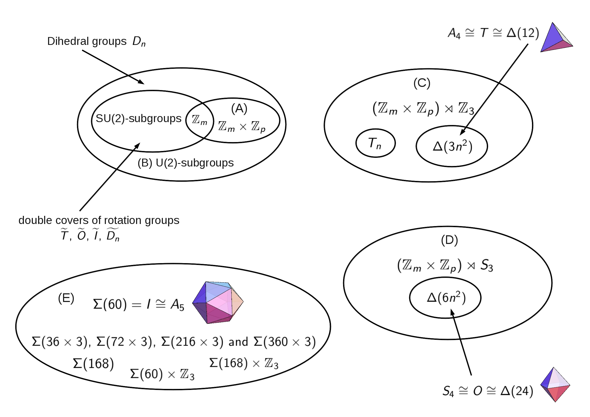

Finite Groups
Finite groups are among the most fascinating mathematical objects. In particular, this field of study is interesting because- it involves aspects of linear algebra, number theory and geometry,
- due to the finiteness of the groups very strong and interesting statements are possible,
- groups can describe symmetries, and symmetries are beautiful and
- finite groups have a huge range of applications.
The image below shows the classification of the finite subgroups of SU(3). 